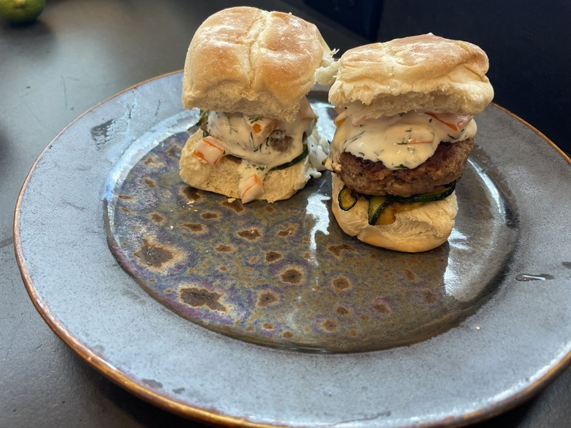

Itsy Bitsy Teeny Weenie Yellow Polka-Dot Zucchini

Description
All-beef sliders topped with sauteed zucchini, yellow bell pepper, and a dill
infused yogurt sauce. Serve with a side of sweet potato fries.
Ingredients
- Ground Beef
- zucchini, sliced into rounds
- Olive Oil
- Yellow Bell Pepper, finely sliced
- Chopped Fresh Dill
- Plain Yogurt
Directions
- Form the beef into small patties. Season each side with salt and pepper and cook the burgers.
- Saute the zucchini in the olive oil and add a dash of salt. Cook over medium heat high heat until the outside has browned.
- In a small bowl, mix the bell pepper, dill, and yogurt.
- Build your slider: Bottom bun, slider, sauteed zucchini, bell pepper yogurt sauce, top bun. Serve along side a pile of sweet potato fries.